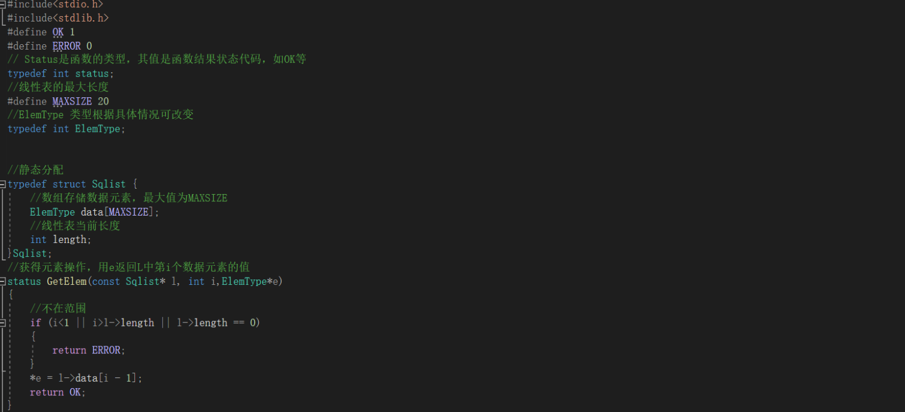
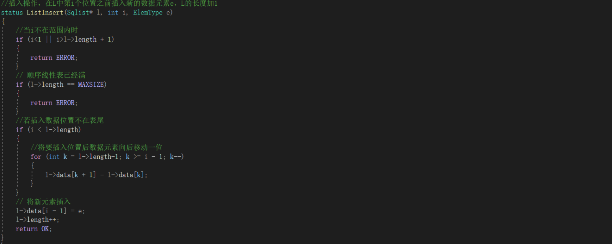
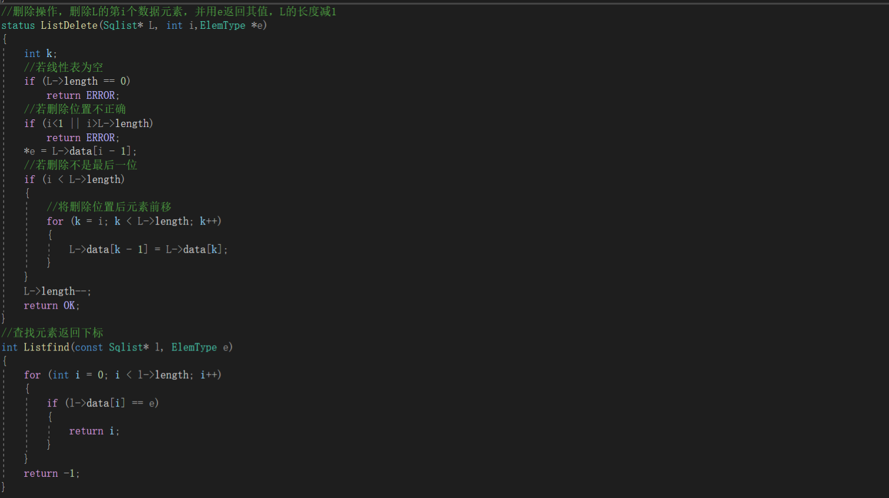
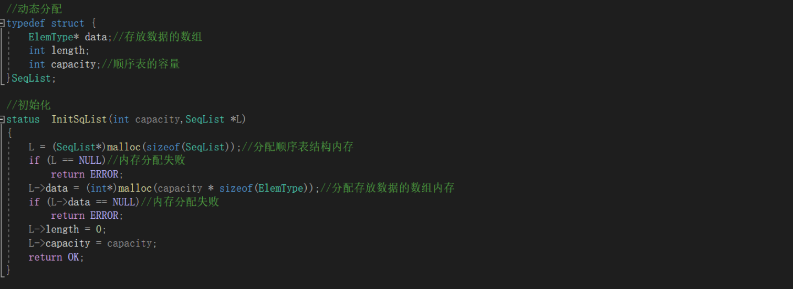
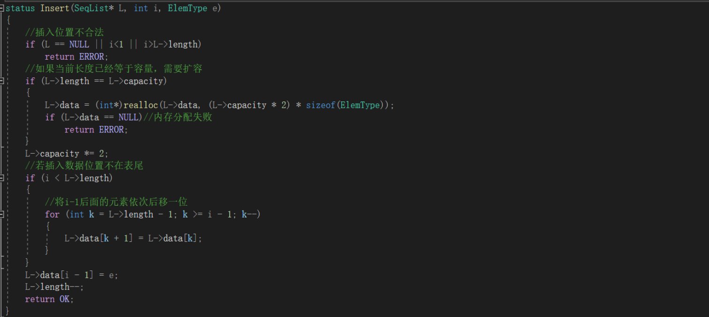
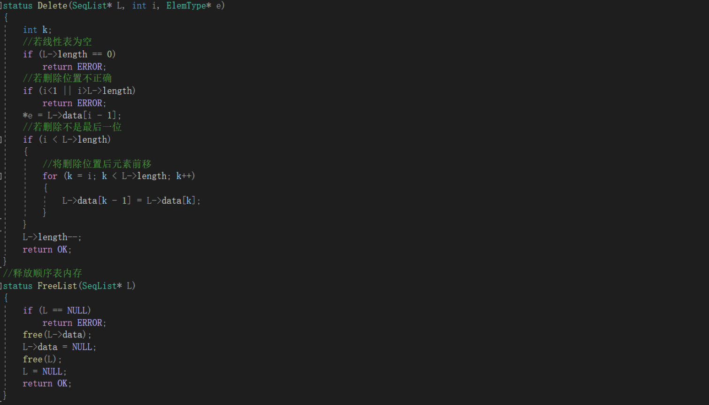

1. 线性表的顺序存储结构
1.1顺序存储即把逻辑上相邻的元素存储在物理位置上也相邻的存储单元中， 元素之间的关系由存储单元的邻接关系来体现。

1.2 由实现方式分为静态分配和动态分配。
(1)静态分配：在程序运行前就分配好一定的存储空间，存储空间固定，不可改变。
(2)动态分配:在程序运行时根据需要动态分配存储空间,存储空间可变。顺序表存满时,可再用malloc动态拓展顺序表的最大容量 但需要将数据元素复制到新的存储区域,并用free函数释放原区域
1.3 顺序表的优缺点
优点：顺序表的存储结构简单，可以随机访问表中的任意元素，查找效率高，适合于元素数量固定且较少变动的场景。
缺点：顺序表的插入和删除操作需要移动大量元素，效率低，不适合于元素数量变动较大的场景。另外，顺序表的存储空间是连续的，当存储空间不足时，需要重新分配更大的存储空间，这可能导致内存碎片的产生。
1.4 代码实现






2. 链表
链表是一种物理存储结构上非连续、非顺序的存储结构，数据元素的逻辑顺序是通过链表中的指针链接次序实现的。
2.1 单链表
单链表中的每个节点包含一个数据域和一个指向下一个节点的指针。查找元素需要遍历链表,时间复杂度为O(n)。删除和插入元素需要调整指针,插入需要动态分配内存,时间复杂度为O(1)。
2.2 双链表
双链表在单链表的基础上每个节点还包含一个指向前一个节点的指针。双链表具有更高的灵活性，可以更高效地进行插入和删除操作，但相应地需要更多的内存空间。
结论
顺序表和链表是常见的数据存储结构，各自有着不同的特点和适用场景。在选择使用时，需要根据具体的需求和情况进行权衡。静态顺序表适用于元素数量固定且较少变动的场景.